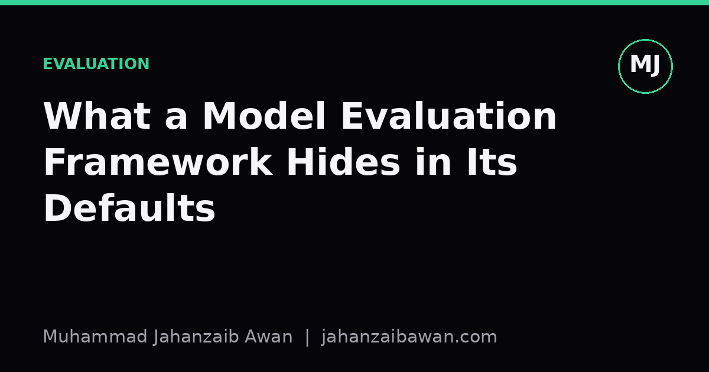

What a Model Evaluation Framework Hides in Its Defaults
Every evaluation library ships with sensible-looking defaults, and those defaults quietly decide what your numbers actually mean.

Why defaults deserve suspicion
When I first used a well-known evaluation library, I ran a classifier through its default cross-validation routine and got a tidy accuracy score within minutes. It felt like progress. What I did not appreciate at the time was how many decisions had already been made on my behalf: how the folds were constructed, whether classes were stratified, what counted as a positive prediction, and how ties in probability scores were broken. None of those choices were wrong, but none of them were neutral either. They were defaults chosen by someone else, for a generic use case that may or may not resemble mine.
This matters because evaluation frameworks are not just measurement tools, they are small pieces of methodology wrapped in code. A default threshold of 0.5 for binary classification assumes that false positives and false negatives cost the same, which is rarely true outside toy problems. A default k of 5 for cross-validation assumes your dataset is large and homogeneous enough that five folds give a stable estimate, which is not always the case with skewed or small datasets. Each default encodes an assumption, and if that assumption does not match your problem, the resulting number can be precise and wrong at the same time.
The danger is not that defaults exist, it is that they are invisible once you stop looking for them. A reported F1 score of 0.81 looks like a fact. It is actually the output of a long chain of choices: how missing values were handled before splitting, whether the split respected time order, how multi-class averaging was performed, and what random seed was used for shuffling. Strip away any one of those and the number can move by several points without anything being done incorrectly.
A worked example: the hidden cost of random splitting
Consider a fairly ordinary task: predicting whether a customer will cancel a subscription next month, using twelve months of historical records. A common first step is to call a train-test split function with its default behaviour, which usually performs a random shuffle before splitting, say eighty per cent train and twenty per cent test. The function reports back a clean 0.76 ROC-AUC. That looks respectable.
The problem is that customer records are not independent draws from a static distribution, they are a time series. A random split means that data from March might end up in the training set while data from January, for the same customer, ends up in the test set. The model can effectively peek at the customer's later behaviour while predicting their earlier behaviour, because features often carry forward information such as cumulative usage or recent support tickets. This is a subtle form of leakage that random splitting does not protect against, precisely because the default treats every row as exchangeable.
If you instead split by time, training on the first ten months and testing on the last two, the same model might report a ROC-AUC closer to 0.68. That drop of eight points is not noise, it is the removal of an advantage the model should never have had. The random-split number was not fraudulent, it was simply answering a different question than the one the business actually cares about, which is: how will this model perform on genuinely future customers? The default made that substitution silently, and only a deliberate decision to split by time exposed it.
A similar story plays out with stratification. Imagine the cancellation rate in your data is nine per cent. A default shuffle split usually preserves this ratio roughly by chance in reasonably sized datasets, but with a smaller sample, say six hundred rows, a single unstratified split might place six per cent of positives in the test fold purely by chance. Metrics like precision and recall become noisy under that kind of imbalance, and comparing two models evaluated on differently imbalanced test folds is close to meaningless, even though both numbers came from the same well-regarded library.
Metrics, averaging and the illusion of a single number
Multi-class evaluation introduces its own quiet defaults, particularly around averaging. A library computing F1 for a three-class problem might default to macro averaging, which treats each class equally regardless of how many examples it has, or it might default to weighted averaging, which weights each class by its frequency. These produce different numbers from the same predictions, sometimes by a wide margin, and the choice is rarely surfaced prominently in a results table.
Suppose a model performs very well on two common classes but poorly on a rare third class that makes up only four per cent of the data. Macro averaging will drag the overall F1 down noticeably because the rare class gets equal weight in the average. Weighted averaging will barely register the poor performance on that class, because its contribution is scaled by its small frequency. If your actual goal is to detect that rare class reliably, say a rare fraud type or a rare disease subtype, the weighted default will flatter the model and hide exactly the weakness you most need to see.
This is why reading documentation for the specific metric function you are calling is not optional diligence, it is part of doing the evaluation correctly. The same applies to threshold selection, confidence interval computation, and how a library handles ties or missing predictions. None of these are edge cases, they are the ordinary mechanics of evaluation, and defaults are chosen for broad applicability rather than for your particular stakes.
A practical takeaway
The fix is not to distrust every library, it is to treat defaults as a starting hypothesis rather than a finished answer. Before trusting a number, I now ask three questions: does the splitting strategy respect the real-world structure of the data, such as time order or grouping by entity; does the averaging or thresholding match what actually matters for the decision being made; and would the result survive being recomputed by someone else using slightly different, but equally reasonable, settings.
In practice this means explicitly setting the parameters that matter, rather than leaving them blank, and writing down why each choice was made. It means checking whether a cross-validation split is grouped by customer or patient where appropriate, and whether class imbalance is handled deliberately rather than left to chance. None of this takes much longer than running the defaults, but it changes a convenient number into a trustworthy one, and that difference is usually the whole point of evaluating a model in the first place.